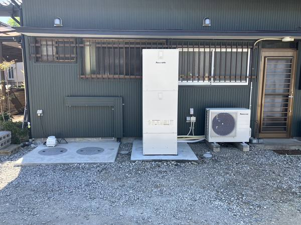
設備Building services
水まわりと、暮らしの設備。
- 給排水・衛生設備の新設・改修
- 浄化槽の新設・入替え・撤去
- 空調・冷暖房設備
- 給湯器・エコキュート
- 浴室・トイレのリフォーム
管工事業特例浄化槽工事業者
給排水・浄化槽などの設備、配水管・下水道の水道、舗装・道路の土木。
掘るところから、元の道に戻すところまで、一社で引き受けます。
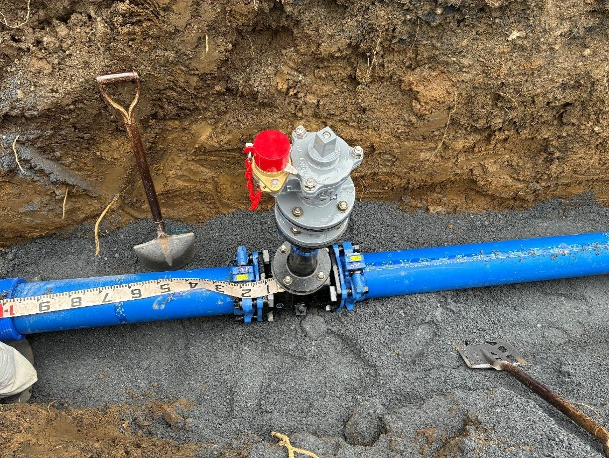
比企郡内なら即日〜35分以内
水漏れ・つまりもご相談ください
小川町の指定上下水道工事店として、宅内の配管から道路の下の水道管まで分かる職人が伺います。
蛇口・配管・屋外の漏水。水道メーターが回り続けるときも。
汲み取り式から浄化槽へ。外の排水工事から内装まで自社で。
新設・入替え・撤去・修繕。補助金の案内と申請もお手伝いします。
交換・新設と、まわりの配管・基礎工事まで一緒に。
ポンプの交換・配管の修理。山あいの地域も伺います。
タイルの浴室からシステムバスへ。和式から洋式へ。
家の中の配管、道路の下の水道管、そして元の道に戻す舗装まで。工事ごとに別の業者を手配する手間がありません。

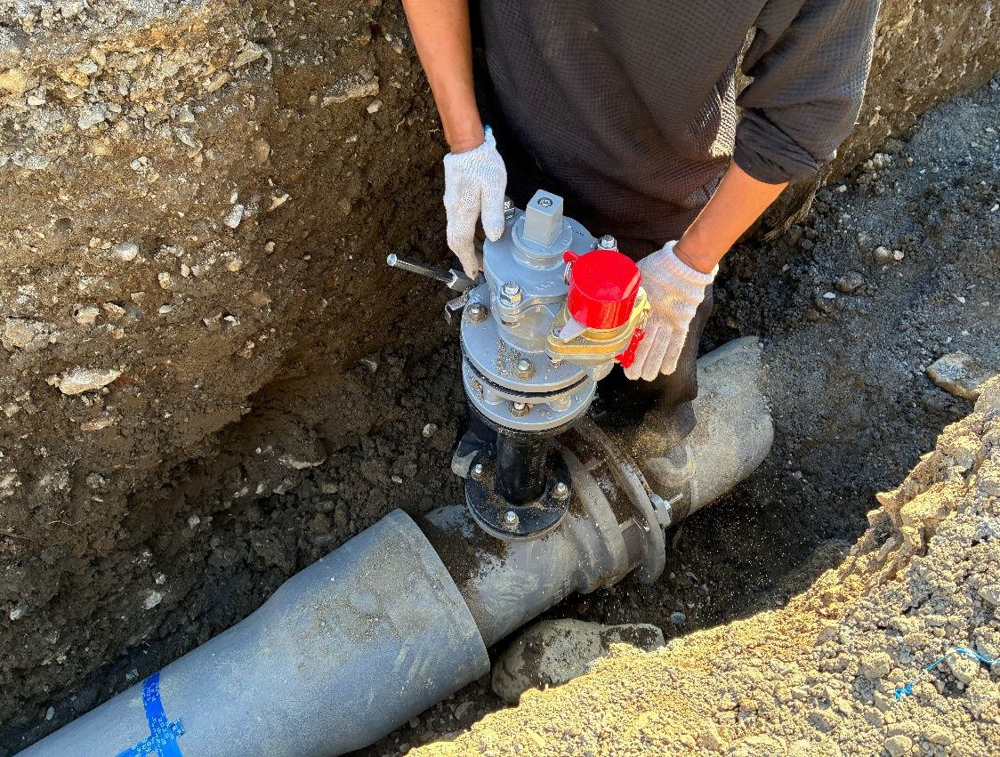
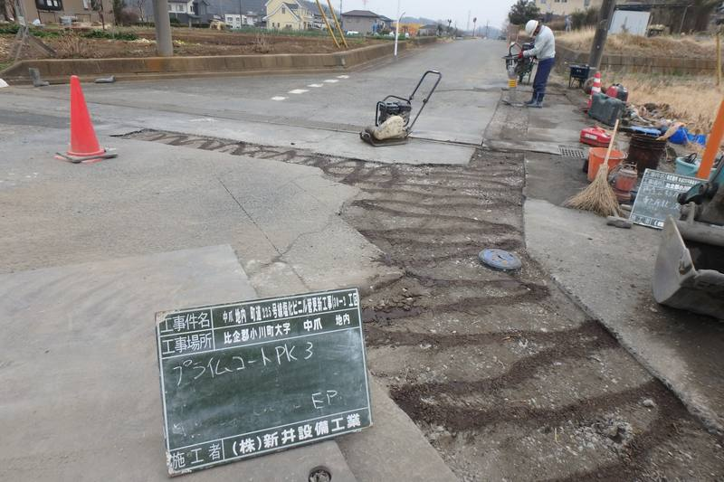
地中に眠る一本の配管から、空を仰ぐ大型重機まで。埼玉・小川町から、暮らしを静かに支える現場の風景をご覧ください。
創業から
（1996年 小川町で創業）
小川町発注の上下水道工事（令和3年度〜）
受注 計 約3億6,145万円（税抜）
最低制限価格との差
1,000円以内（16件中）
うち7件は差0円
建設業許可
（管・水道施設・土木 ほか）
自社の重機・車両
掘削から運搬まで
比企郡内の到着目安
（最も遠い町まで）
小川町の配水管・下水道の工事を、令和3年度から18件受注しています（小川町が公表している入札結果より）。町の水道を、町の業者が守ります。
| 年度 | 工事名 | 発注者 | 工種 | 受注金額 | 最低制限価格 | 最低制限との差 |
|---|---|---|---|---|---|---|
| R8 | 大塚地内小川公共下水道1-5分区26-1号枝線工事に伴う配水管布設替工事 | 小川町 | 上水道 | 41,080,000円 | 37,168,000円 | +3,912,000円予定価格と同額 |
| R8 | 木部地内 町道205・4258号線配水管更新工事 | 小川町 | 上水道 | 17,572,000円 | 17,572,000円 | 0円最低制限ちょうど |
| R7 | 腰越地内 金勝腰越線配水本管新設工事 | 小川町 | 上水道 | 11,814,000円 | 11,813,000円 | +1,000円 |
| R7 | 街路整備工事（腰越工区その3）に伴う配水本管新設、配水管布設替工事 | 小川町 | 上水道 | 16,827,000円 | 16,826,000円 | +1,000円 |
| R6 | 令和6年度社資（街路）工事（青山工区その7）に伴う配水本管新設、配水管布設替工事 | 小川町 | 上水道 | 40,040,000円 | 40,040,000円 | 0円最低制限ちょうど |
| R6 | 木部地内 公共下水道枝線工事に伴う配水管布設替工事 | 小川町 | 上水道 | 27,756,000円 | 27,756,000円 | 0円最低制限ちょうど |
| R6 | 飯田地内 町道105号線他配水管更新工事（6-1工区） | 小川町 | 上水道 | 6,690,000円 | — | —最低制限なし（指名競争） |
| R6 | 小川公共下水道1-1分区24-1号枝線工事 | 小川町 | 下水道 | 52,745,000円 | 52,706,000円 | +39,000円 |
| R5 | 木部地内 町道104号線配水管更新工事（5-1工区） | 小川町 | 上水道 | 26,434,000円 | 26,434,000円 | 0円最低制限ちょうど |
| R5 | 木部地内公共下水道1-1分区23-1号枝線工事に伴う配水管新設工事 | 小川町 | 上水道 | 10,671,000円 | 10,671,000円 | 0円最低制限ちょうど |
| R5 | 東小川住宅団地再生地区道路等インフラ整備工事に伴う配水管新設工事 | 小川町 | 上水道 | 13,427,000円 | 13,427,000円 | 0円最低制限ちょうど |
| R4 | 社資（交通安全）工事（下横田工区）に伴う配水管更新工事 | 小川町 | 上水道 | 15,496,000円 | 15,495,000円 | +1,000円 |
| R4 | 腰越地内 環状1号線金勝腰越線配水本管新設工事（その2） | 小川町 | 上水道 | 13,243,000円 | 13,242,000円 | +1,000円 |
| R3 | 社資（改築）工事（本田小川その20）に伴う配水管新設工事 | 小川町 | 上水道 | 8,689,000円 | 8,689,000円 | 0円最低制限ちょうど |
| R3 | 中爪地内 町道3394号線他塩化ビニル管更新工事（3-4工区） | 小川町 | 上水道 | 19,630,000円 | 17,313,000円 | +2,317,000円予定価格と同額 |
| R3 | 大塚地内 町道5202号線塩化ビニル管更新工事（3-3工区） | 小川町 | 上水道 | 19,657,000円 | 19,656,000円 | +1,000円 |
| R3 | 腰越地内 環状1号線金勝腰越線配水本管新設工事 | 小川町 | 上水道 | 14,191,000円 | 14,190,000円 | +1,000円 |
| R3 | 腰越地内 公共下水道1-5分区21-1号枝線工事に伴う配水管新設工事 | 小川町 | 上水道 | 5,490,000円 | — | —最低制限なし（指名競争） |
小川町が公表している令和3年度以降の入札結果から作成。金額はすべて税抜。差＝受注金額−最低制限価格。受注金額の合計 361,452,000円。最低制限価格の無い指名競争入札（2件）は「—」。
ご家庭の水まわりから、道路の下の工事まで。仕上がってからは見えなくなる所こそ、写真で記録しています。
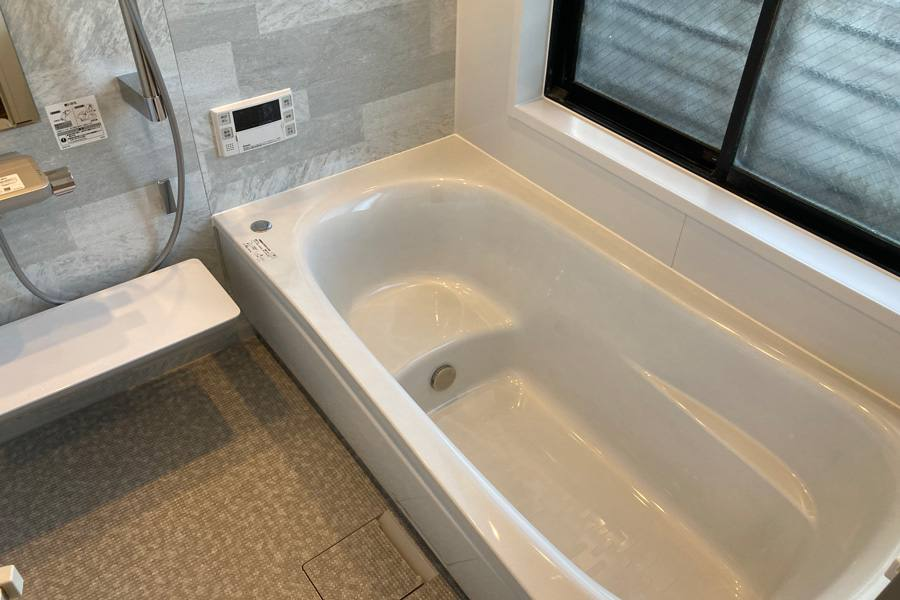
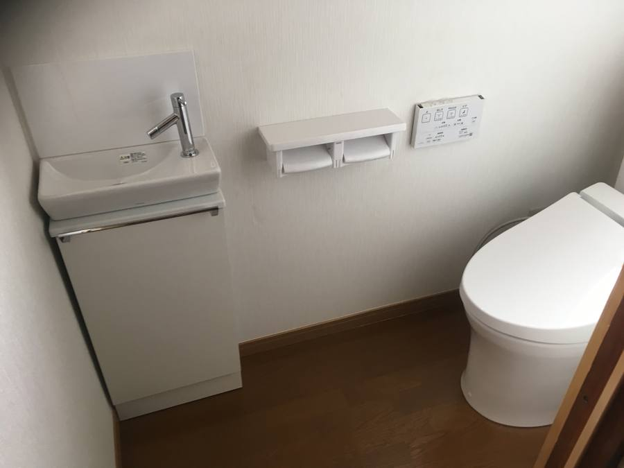
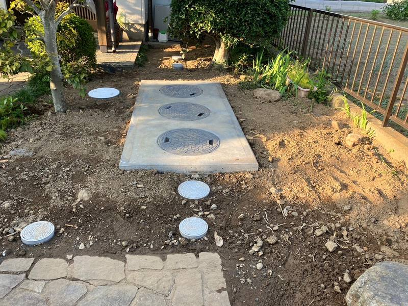
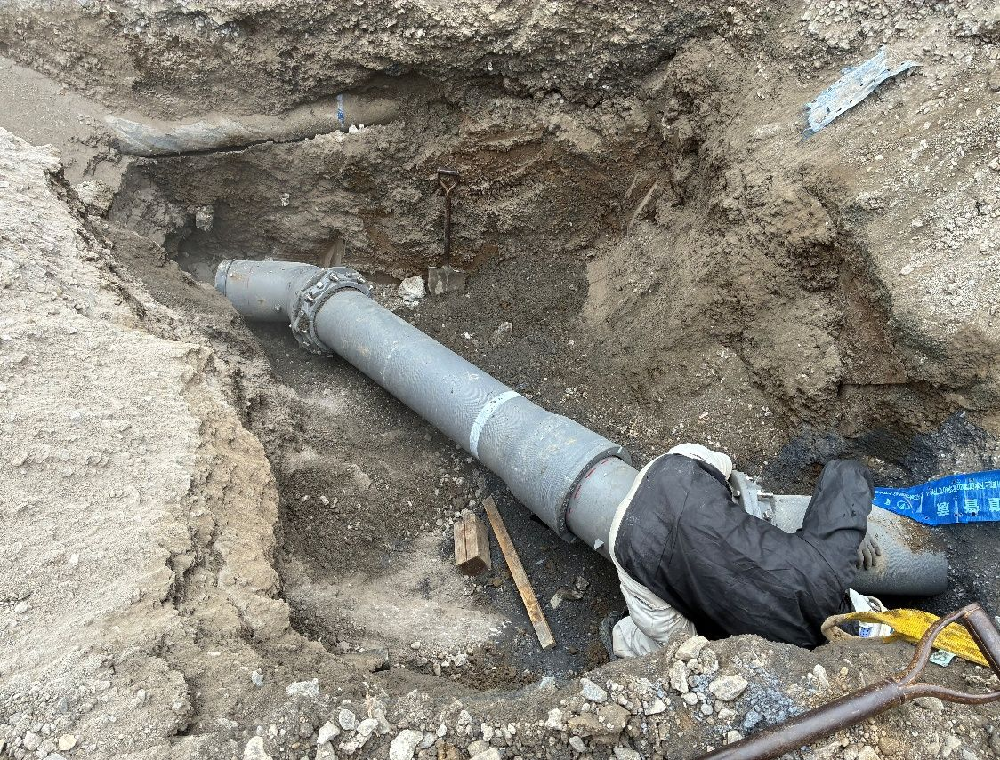
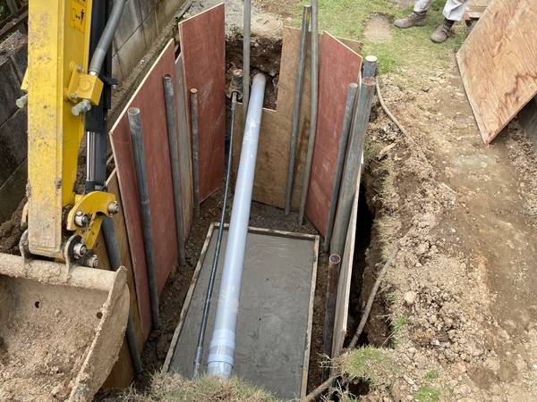
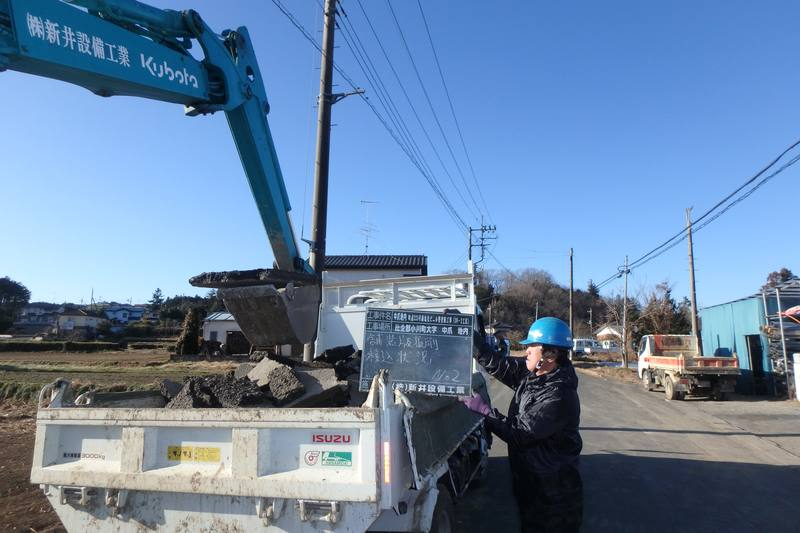
はじめての方も、電話一本で大丈夫です。
お電話かフォームで。困っている所の写真があると早く分かります。
比企郡内なら即日〜35分以内。配管の状態を見て原因を確かめます。
工事の内容と金額をご説明します。相見積もりも歓迎です。
掘削から復旧まで自社で。工事中の写真を記録します。
仕上がりを一緒に確認。その後の不具合もご連絡ください。
設備・水道・土木の許可と自社の重機で、掘削・配管・埋戻し・舗装の復旧まで。業者の手配待ちがなく、工期が読めます。
小川町の配水管・下水道の工事を令和3年度から18件。公共工事と同じ写真管理・出来形の確認を、ご家庭の工事にも。
過去の設計書をもとにした自社開発のソフトで、単価の出どころを確かめながら積算しています。お見積りは内訳を付けてご説明します。
小川町に本社。比企郡内なら即日〜35分以内。山あいの浄化槽・井戸のお宅も伺います。災害のときは、県との水道施設の復旧協定にもとづいて応急の復旧にあたります。
当社は、公共工事の積算と工事写真の整理に使うソフトを自社で開発しています。数字は2026年9月15日時点です。
小川町から開示を受けた設計書を収録。過去の単価を調べ、仕様書への記入と積算の照合まで。
02 / Saitama埼玉県の発注課所の設計書から単価を引き、仕様書に当てて内訳書と工事価格まで計算。
03 / Site photosスマートフォンで撮った工事写真を、その場で写真管理表の項目に仕分け。黒板と配管の略図も。
狭い道のマイクロショベルから、クレーン仕様の油圧ショベル、ダンプまで。自社で持っているから、すぐ現場に入れます。
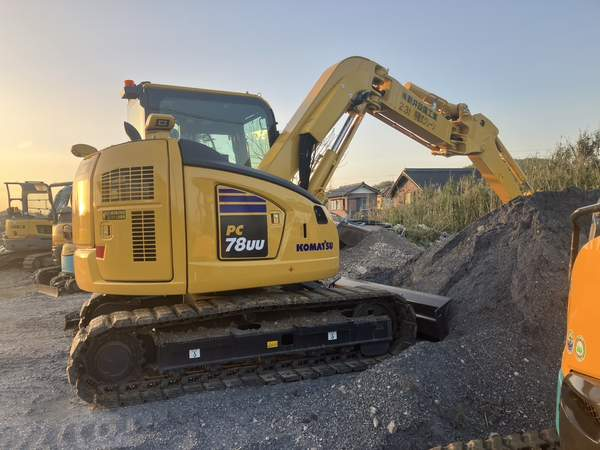
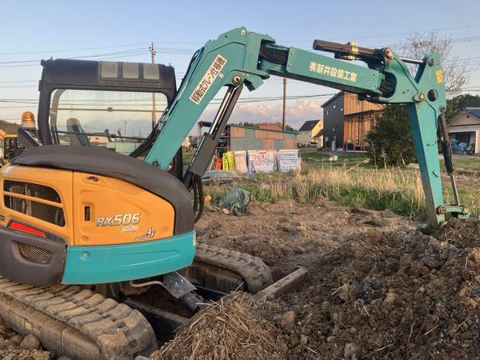
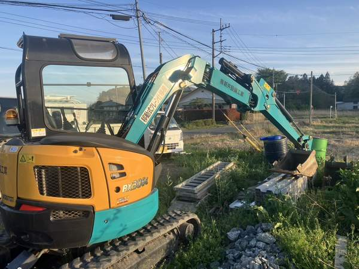
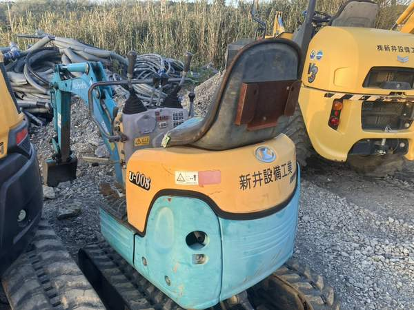
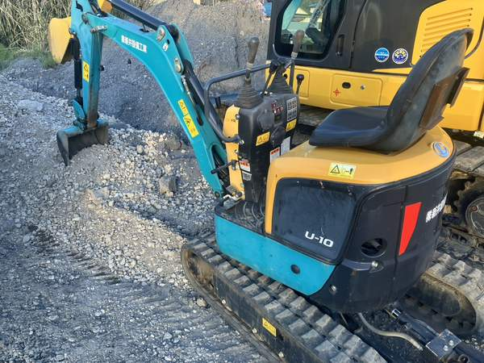
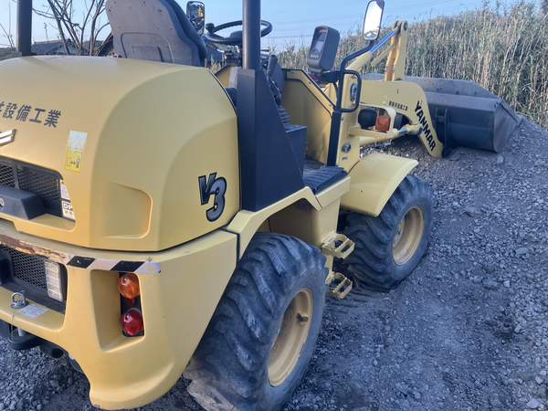
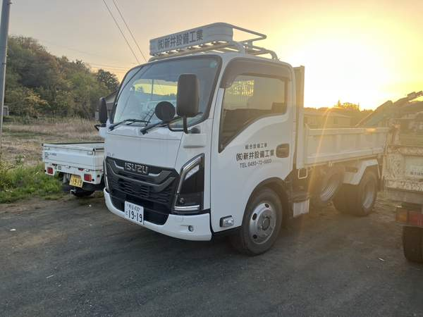
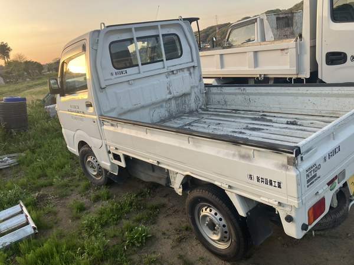
本社から各役場までの道のりと、車での目安です（道路の混み具合で変わります）。
このほか、熊谷市・深谷市・坂戸市・鶴ヶ島市・越生町・美里町の指定工事店でもあります。お気軽にご相談ください。
道路の下の水道管は、町の暮らしそのものです。施工管理技士・給水装置工事主任技術者などの資格をお持ちの方は優遇します。
管工事・舗装・運搬などで、一緒に仕事をしていただける協力業者を募集しています。お気軽にお電話ください。
0493-72-5923 に電話する7:45 事務所で打合せ → 8:00 現場で朝礼・危険予知 → 掘削・配管 → 12:00 昼休み → 埋戻し・片付け → 17:00 写真と日報の整理
| 商号 | 株式会社新井設備工業 ARAI SETSUBI KOGYO CO., LTD. |
|---|---|
| 代表者 | 代表取締役 新井 昭男 |
| 創業・設立 | 創業 平成8年（1996年） 株式会社として設立 平成26年（2014年）12月5日 |
| 資本金 | 500万円 |
| 所在地 | 〒355-0314 埼玉県比企郡小川町大字中爪47番地3 |
| 電話・FAX | TEL 0493-72-5923 ／ FAX 0493-72-3391 |
| 営業時間 | 8:00〜18:00（日曜・祝日休み） |
| 建設業許可 | 埼玉県知事 許可（般-6）第66415号 土木工事業／とび・土工工事業／舗装工事業／管工事業／水道施設工事業／鋼構造物工事業／石工事業／塗装工事業／しゅんせつ工事業 有効期間 令和7年3月16日〜令和12年3月15日 |
| 浄化槽 | 埼玉県 特例浄化槽工事業者（届出）第1677号 |
| 指定工事店 | 上水道（指定給水装置工事事業者）・下水道（排水設備指定工事店） 小川町（給水 第98034号）／嵐山町／東松山市／坂戸市・鶴ヶ島市／越生町／熊谷市／深谷市 このほか 美里町／ときがわ町 |
| 有資格者 | 1級土木施工管理技士／管工事施工管理技士／給水装置工事主任技術者／下水道排水設備工事責任技術者／浄化槽設備士 技術職員 2名（土木一式：1級1名・2級1名、管：2級1名） 人数は経営事項審査（令和6年11月30日基準）による |
| 保険など | 雇用保険・健康保険・厚生年金保険 加入／法定外労災補償制度 加入／退職金制度あり／インボイス制度 登録事業者 |
| 防災協定 | 埼玉県管工事業協同組合連合会の会員として、埼玉県との「災害時における水道施設の復旧に関する協定」に基づく災害応急活動に従事 |
| 法人番号 | 3030001106047 |
| 主な発注者 | 小川町（上下水道）、個人・法人のお客様 |
小川町の現場から。工事のこと、比企の四季、日々のこと。代表 新井 昭男が綴ります。
できます。浄化槽の設置から外の排水工事、トイレの内装まで自社で行います。小川町をはじめ多くの市町村に浄化槽設置の補助金があり、制度のご案内と申請のお手伝いもします。
浄化槽の設置・外の排水工事・トイレの内装まで含めて、1週間ほどが目安です（現場により前後します）。工事中のトイレの使い方もご相談のうえ工程を組みます。
比企郡内なら即日〜35分以内を目安に伺います。漏水は放っておくと水道料金や建物への影響が大きくなりますので、まずはお電話（0493-72-5923）ください。
現地調査・お見積りとも無料です。写真を送っていただければ概算もお出しします。相見積もりも歓迎です。
はい、ご相談ください。管工事・水道施設・土木などの施工をお受けします。建設業許可や保険加入の写しなど、取引に必要な書類をお出しします。
小川町を中心に、比企郡の8町村と東松山市・寄居町です。熊谷市・深谷市・坂戸市・鶴ヶ島市・越生町・美里町の指定工事店でもありますので、ご相談ください。
工事のご相談、お見積り、協力会社・採用のお問い合わせもこちらへ。